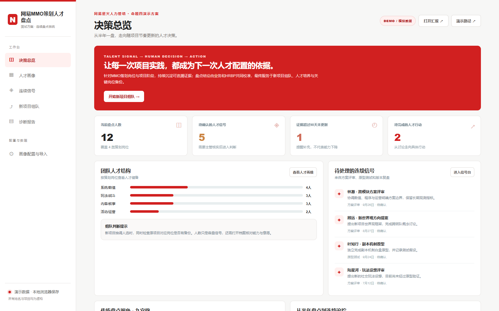
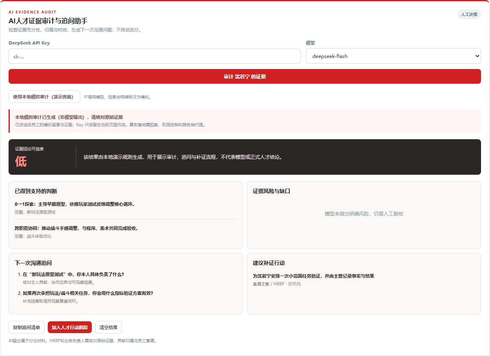

连续信号
记录版本、评审、复盘里发生了什么，并保留原文来源。
让人才判断跟上项目节奏，而不是等到半年后再回忆。
网页原型 · 全部数据均为虚构模拟记录版本、评审、复盘里发生了什么，并保留原文来源。
按岗位与阶段判断这些证据说明什么，并标记置信度。
综合能力、意愿、互补性与原项目接续风险比较方案。
把结论变成验证任务、负责人和下一次复查时间。
机制完整性、假设透明度、敏感性分析、经济系统稳定性。
目标拆解、原型迭代、手感验证以及跨专业协同。
世界观一致、内容产能、玩家情绪理解与叙事协同。
活动节奏、数据复盘、突发响应与长线经营意识。
现场演示只走一条主路径：上传纪要 → 确认信号 → 查看画像 → 形成行动。

原文可回溯，人工确认后才进入档案。
同时看能力、证据、意愿与原项目接续风险。
形成验证任务，明确责任人与复查时间。
它回答的不是“这个人几分”，而是“这个判断凭什么成立，还缺什么”。

哪些结论已有原始记录支撑。
是否存在单一来源、归属不清或时间过旧。
下一次 1 对 1 应该确认哪些语境。
设计什么任务才能验证尚不确定的能力。
抽取候选事实、检查证据充分性、发现矛盾、生成追问。
核验语境与归属，决定评分、任用、晋升、机会分配和沟通方式。
上传 TXT／DOCX，提取候选事实，并保留人工确认入口。
检查证据充分性，生成追问和补证建议，不自动改分。
形成多套人选方案，把能力缺口转成可验证任务。
解释关键岗位、能力断层与项目阶段风险，并回链证据。